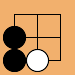
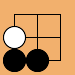
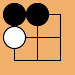
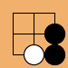
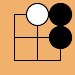
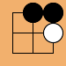
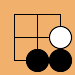
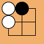

(reflect in horizontal line)
(counterclockwise)
(reflect in main diagonal)
(reflect in vertical line)
(reflect in back-diagonal)
See also sgf, sgfcharset, sgfcheck, sgfcmp, sgfdb, sgfdbinfo, sgfinfo, sgfmerge, sgfsplit, sgfstrip, sgftopng, sgfvarsplit, sgfx, ugi2sgf.
% sgftf [options] < input > output
The utility sgftf reads an SGF file, transforms it (e.g. by rotation or horizontal or vertical flip) and writes it to stdout. The default transformation is a rotation by 180 degrees. Recognized transformations are -swapcolors, -rot90, -rot180, -rot270, -hflip, -vflip, -dflip, -aflip with meanings as follows.
| board | operation | effect |
|---|---|---|
|
-tra0, -rot0 | do nothing |
|  | -tra1, -vflip | vertical flip (reflect in horizontal line) |
|  | -tra2, -rot1, -rot90 | rotate one turn (90 degrees) left (counterclockwise) |
|  | -tra3, -bflip | back-diagonal flip (reflect in main diagonal) |
|  | -tra4, -rot2, -rot180 | rotate 180 degrees |
|  | -tra5, -hflip | horizontal flip (reflect in vertical line) |
|  | -tra6, -rot3, -rot270 | rotate 90 degrees right (clockwise) |
|  | -tra7, -dflip | diagonal flip (reflect in back-diagonal) |
|  | -swapcolors | interchange black and white |
(This is spelled out in detail because life is confusing: a reflection in a horizontal line is a vertical flip. The name indicates the direction of movement. There are several aliases for each option: some are easier for humans, some for software.)
Options:
% sgftf -rot180 < in.sgf > out.sgfRotate 180 degrees. (The option -rot2 has the same effect.)
With -swapcolors the properties B, W and AB, AW are interchanged.